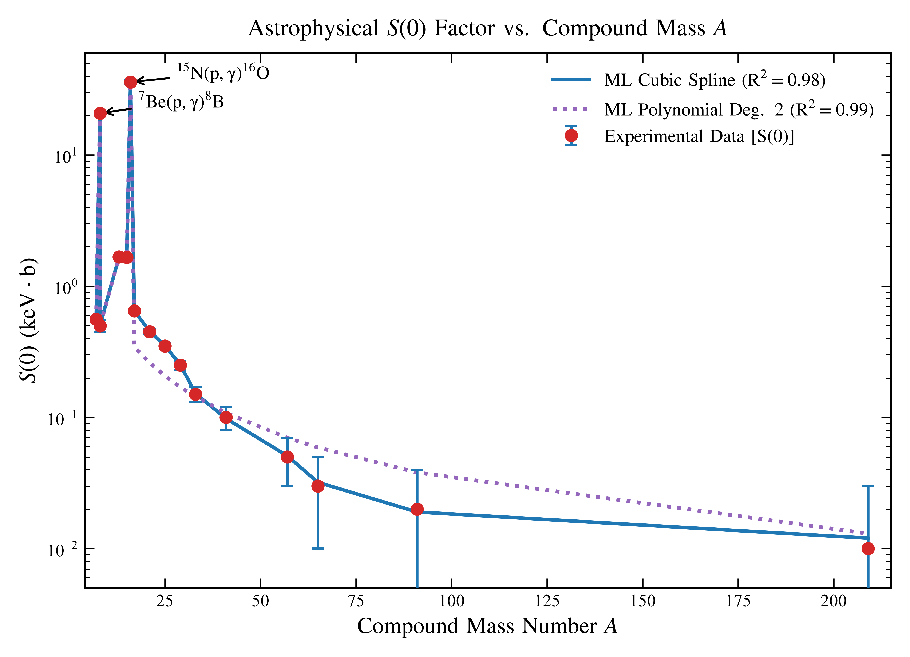

1. Physics-Constrained Surrogates for Astrophysical S-Factors & MACS
In stellar burning environments, nuclear capture cross sections \(\sigma(E)\) drop exponentially as energy falls into the thermal Gamow window (\(E \sim 10 - 300\text{ keV}\)) due to Coulomb barrier quantum tunneling:
Because direct beam measurements in this energy regime yield cross sections in the picobarn range (\(10^{-12}\text{ b}\)), direct measurements are strongly masked by cosmic-ray background noise. This project builds a scientific machine learning framework resolving low-energy extrapolations:
- Zero-Energy Extrapolation \(S(0)\): Formulated Matérn-5/2 Gaussian Process Regression (GPR) and physics-constrained MLPs to extrapolate \(S(0)\) and higher-order derivatives \(S'(0), S''(0)\) while delivering \(95\%\) Bayesian credible error bands.
- Multi-Reaction Benchmark Matrix: Standardized and harmonized 17 experimental radiative capture channels from IAEA EXFOR and JINA REACLIB databases, including \(^{7}\text{Be}(p, \gamma)^{8}\text{B}\), \(^{15}\text{N}(p, \gamma)^{16}\text{O}\), \(^{3}\text{He}(\alpha, \gamma)^{7}\text{Be}\), and \(^{12}\text{C}(p, \gamma)^{13}\text{N}\).
- Maxwellian-Averaged Cross Sections (MACS): Integrated extrapolated \(S\)-factors across thermal Maxwell-Boltzmann distributions to calculate stellar reaction rates \(\langle \sigma v \rangle\) across temperatures \(T_9 = 0.01 - 10\).

Figure 1: Non-linear machine learning surrogate predictions and experimental validations across low-energy capture channels, showing smooth Gamow window extrapolation without unphysical high-energy divergence.